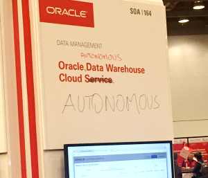

|
|
This was first published on https://blog.dbi-services.com/autonomous-database (2017-10-08)
Republishing for new followers. The content is related to the the versions available at the publication date
Larry Ellison has announced Oracle 18c to be the Autonomous Database, the no-human labor, and self-driven, database. Here is a quick recap of what it is behind the marketing words. My opinion only.
Since Oracle decided to be a public cloud PaaS provider, they announced ‘unmanaged’ and ‘managed’ services. The managed service for DBaaS is where you are not the Database Administrator.  You have full administration right to deploy and develop your application, but the system administration is done by Oracle: provisioning, patching, upgrade, system tuning, availability. The first managed service was announced last year at OOW16: the Oracle Exadata Express Cloud Service, for developers. And the second managed service is the Oracle Data Warehouse Cloud Service, for data warehousing. It is planned for December 2017 and will be based on new version: Oracle 18c. And let’s be clear, the ‘autonomous’ label came at the last minute, as the marketing message for Open World, to show that the managed service is fully automated, because Cloud is about automation.
So, is that only marketing? I don’t think so. There are real features behind it. And some of them exist for a long time, and had just to be enhanced further in 18c.
The features are there for a long time for full automation. RAC protects from instance or server crash and Data Guard protects from all other failures. Both are fully automated with no-human intervention: service relocation in RAC, Fast-Start FailOver in Data Guard. And both can failover transparently with Application Continuity. Oracle also recently introduced Sharding, to link data availability to different datacenter. And this technique will also be used for RAC instance affinity in Oracle 18c.
You can apply patches in a rolling manner with RAC. The problem was OJVM, but this will be also rolling in 18c. You can do rolling upgrade with Data Guard. And 18c will have automated and faster upgrade at PDB plug-in. From a system point of view, all is fully automated. However, we will still need human intervention for testing, and planning it at the right time, and of course for troubleshooting when something goes wrong. The autonomous database is not incompatible with that. With logical replication (Golden Gate, Transient logical standby) or versioning (Edition Based Redefinition, Workspace Manager) Oracle has the tools to automatically provide the environment to test the upgrade before it is opened in production.
We can also imagine that other features may help to avoid regression. For example, SQL Plan Management can prevent execution plan regressions on common use-cases, and let the (human) user accept evolved plans later. This can also be done automatically (but humans still have to define the capture). Of course, we all know the limits of the advisors and automatic implementation. But there are also some applications where it can be fine. This ‘autonomous’ Cloud Service is a possibility, not a universal solution.
Again, we all know that the database cannot be optimized without the knowledge of the data and the design of the application. But Oracle has also a lot of features to automate some common practices. Automatic Data Optimization, Segment Advisor, SQL Access Advisor, Auto DOP, automatic choice of buffered or direct reads,… We have seen a lot of drawbacks with SQL Plan Directives, but that was mainly in OLTP. This new managed service is for DWH where dynamic sampling is not a bad idea.
The idea is to ‘load data and run’ and Oracle takes care of index, partitioning, etc. You create the table and declare Primary keys and Foreign key (RELY DISABLE NOVALIDATE see a previous blog post about that). Then I suppose that Oracle can guess which are the dimension tables and the fact tables. And then do some common things to do on that: partition on the date dimension (if there is only one – maybe it has to detect some load/query patterns), create bitmap indexes on all fact foreign key. Online statistics gathering will be extended in 18c to incrementally maintain statistics on bulk-insert, and this may include histograms.
I’m very skeptical on that point, because I’ve seen lot of datawarehouse databases where, even on big hardware, there is always a need for optimization. But my point of view may be biased. I’m a consultant, and then I see only the databases where people think they need human analysis and troubleshooting. There may be some non-critical datawarehouse databases where nobody is doing any optimisation, and then implementing some default optimization may be sufficient to make it a bit more efficient. This autonomous elastic cloud service may be a good start for some projects, when it is difficult to plan the hardware and human resources that will be needed. But I’m quite sure that after a while, designing an efficient and scalable infrastructure and data model will still require our DBA skills and human intelligence.
This service is provisioned as a PDB where what we can do is limited by the multitenant lockdown profiles. We can connect easily (with a credentials .zip) from SQL Developer, and we can load data from an object store using the DBMS_CLOUD package to define the credentials (Swift) and load text files. Once again, it is an evolution of existing features like external tables and preprocessors.
This service is Elastic: it can scale the CPU resource up and down without stopping the service. Again this can use existing features: OVM for the host, and Resource Manager for the CDB and PDB.
Some will say that it is only marketing with nothing behind, and the same announcement that was made by each previous version. Others will say that it is really autonomous, self-driving, self-securing, self-repairing. This ‘self-driven’ idea is an analogy with Tesla (Elon Musk is a big friend of Larry Ellison), but for the moment, there’s still a human inside a Tesla. Autonomous is a vision for the future, not the present. The present is a new managed service, more online operations, and easier upgrades.
What I really like is the integration of existing features to serve a new marketing trend. Do you remember when the flashback features came out? Flashback query existed internally since the invention of rollback segments (and maybe even before with the Before Image). It was exposed in 9i with a dbms package, and 10g in the SQL ‘as of’. All was already there to bring a feature that no other RDBMSs are capable of. The existing features support the marketing message at the right time, and this marketing message encourages to develop new features again, like new online operations. And those do not benefit only to the managed cloud services as they go to the main branch of Oracle Database.
The other thing I like is the idea to have a configuration dedicated to specific needs. In the OOW17 hands-on lab, there was even a “_cloud_service_type” parameter set to DWCS. Here this service is for DWH, and there will be one dedicated to OLTP mid-2018. This is something I would like to see in future versions. For example, there was a lot of discussion about 12.1 enabling adaptive statistics by default, and 12.2 disabling them. This kind of default settings could be set depending on the database type: more conservative for OLTP upgrades, more adaptive for new datawarehouse projects.
|
|
{kind=link}
“Data Guard protects from all other failures”? I wish I could share your optimism… How does Dataguard protect from network dropped connections, which happen every night to around 200 of our connections between data centres? Oh, wait: it’s all “autonomous”? What we need is a “better network”? Right…
Hi Noons, By ‘all other failures’, I mean database failures. If your network drop connections, then Oracle protects the committed transactions and has Dead Connection Detection. Regards, Franck.
Thanks Franck – the key for an autonomous system is: the system boundary. A lot of individual components support the autonomous operation but it takes in the end much more: rules, how to define “good service”. I think we just all learn, what it means to set the system boundary with ease and define the rules of the game.